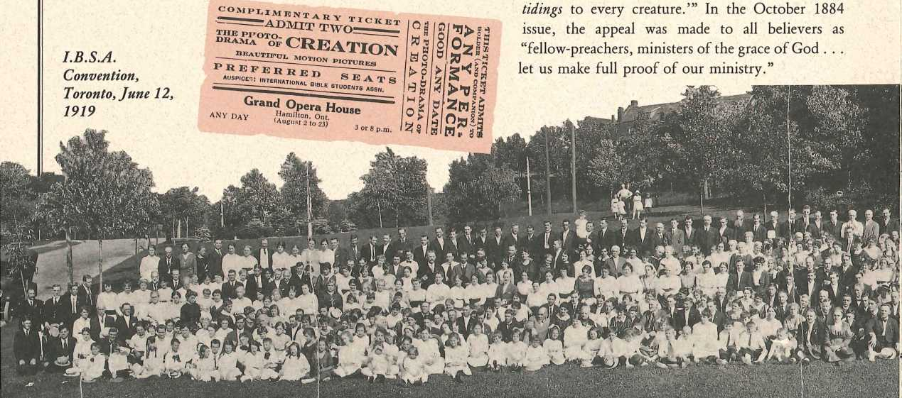
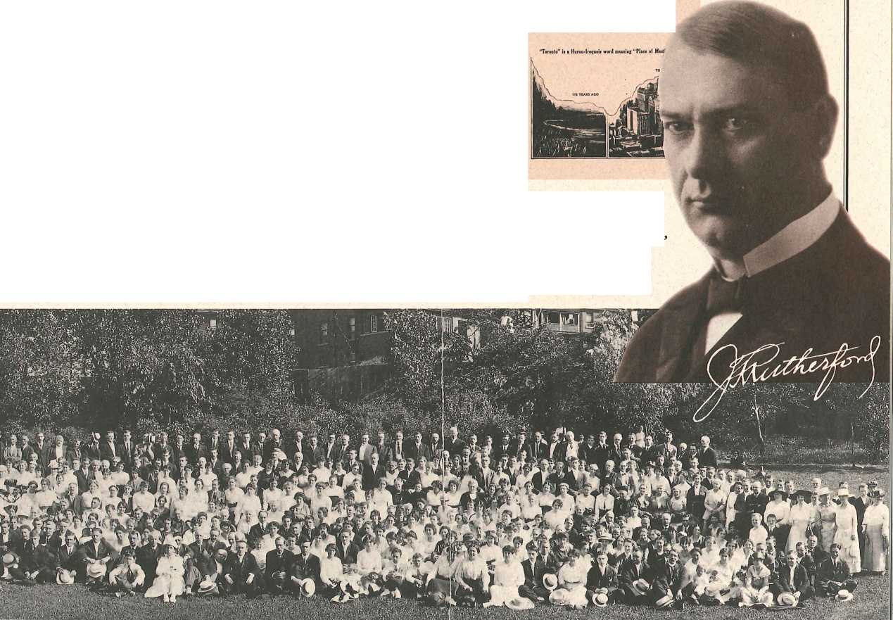
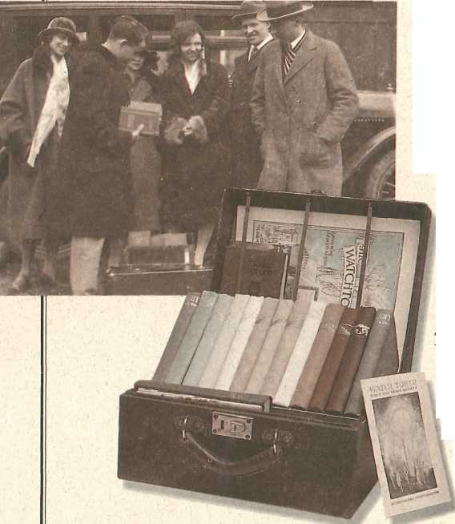
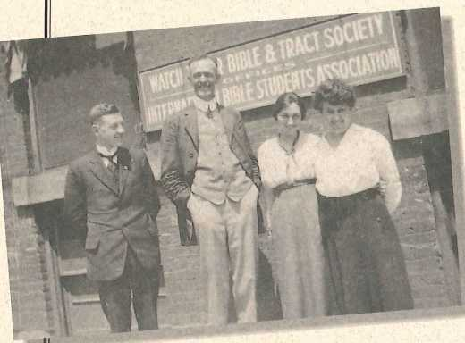
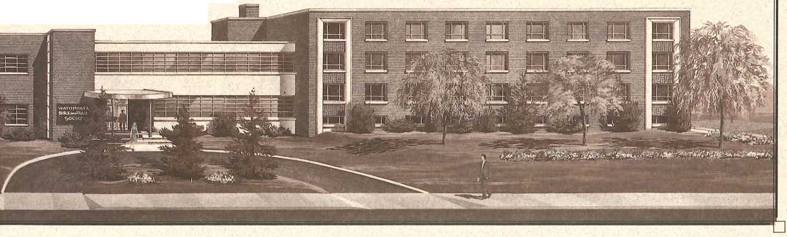
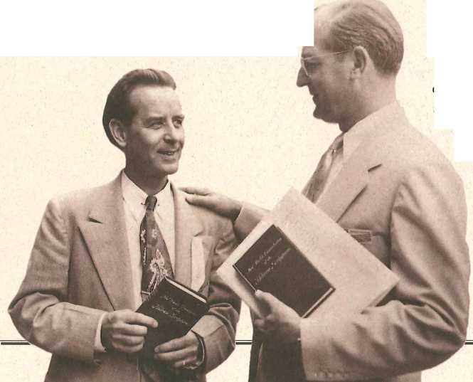
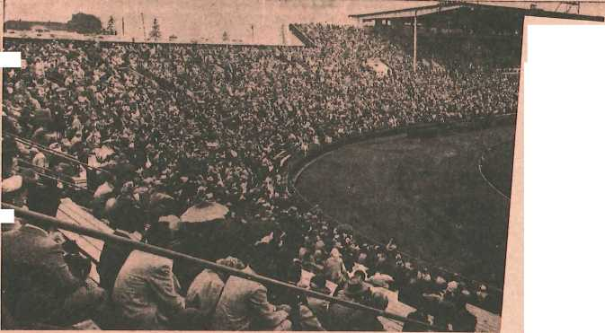

WATCH TOWER BIBLE
AND TRACT SOCIETY OF CANADA
The INTERNATIONAL BIBLE STUDENTS
ASSOCIATION of CANADA
Charles Taze Russell at age 64, in 1916
The 19th century was marked by great religious ferment as many students of the Bible were expecting a time of change and were looking forward to the second coming that Christ Jesus had promised. Among those who had a strong hope and interest in the fulfillment of prophecy was a group of people in Allegheny, Pennsylvania, organized for serious Bible study by Charles Taze Russell.
These Bible students strongly felt that there was a need for reexamination of the creeds and practices of major religious denominations. It was their view that fundamental Christian principles had become overshadowed by denominational interests. They began a program of Bible research to clarify these issues. This group described themselves as the International Bible Students Association.
As their understanding of the Scriptures progressed, the Association adopted the practice of disseminating their views through religious tracts, magazines, and books, in addition to meetings and sermons. Public
evangelism also became part of their practice. In this they sought to follow the customs of the early Christian Church. They also advocated a further feature of primitive Christianity—the ministry of all believers; that there should not be a clergy/laity distinction within the Christian Church but that all members should be ministers, evangelists, and preachers.
A ticket for the Hamilton showing of the “Photo-Drama of Creation, ” produced between 1912 and 1914
In 1879 they began to publish, under the editorship of C. T. Russell, the magazine Zion's Watch Tower (now known as The Watchtower). Zion's Watch Tower (April 1882) emphasized: “All of our people are preachers, ... we were all given the same commission: ‘Go ye into all the world and preach this glad
PHOTO
I.B.S.A. Convention, Toronto, June 12, 1919
tidings to every creature.’” In the October 1884 issue, the appeal was made to all believers as “fellow-preachers, ministers of the grace of God . . . let us make full proof of our ministry.”
---ADMIT TWO——-the PI’OTO v O——
u=S!—■«.....
lirand Opera House " any Day Hamilton, Ont
'August 3 to 23) 3
Brother Macmillan (third from left), one of the 8 directors of the Watch Tower Bible and Tract Society of Pennsylvania, in 1918
Meetings were held regularly by these Bible Students. They were not content to meet just once a week like many of Christendom’s churchgoers. In addition to holding public services on Sundays, they met in smaller groups in homes at other times during the week. In most meetings all in attendance shared in the discussion. This practice continues down to the present time.
By the mid 1880’s, the little congregation in Allegheny, Pennsylvania, had begun to establish its activities in different parts of the United States, Canada, and England. Its basic principles were strict adherence to the Bible for authority and distribution of printed Scriptural material by volunteer workers.
During this same period, Zion’s Watch Tower Tract Society was formed as a unincorporated association to expand the preaching activity. It was incorporated in 1884 under the laws of the Commonwealth of Pennsylvania.
TORONTO
International Convention
BIBLE STUDENTS July 18-26, 1927
The Bible Students, now known as Jehovah’s Witnesses, first began to preach in Canada in 1880. From earnest friends and relatives in the United States, some Canadians received literature and a heartening message about a peaceful new system of things under God’s Kingdom in the hands of the glorified Jesus Christ. (Acts 3:19-21; Revelation 21:1-5) One of these thought-provoking publications, Food for Thinking Christians, published in 1881 found ready acceptance in Canada.
By 1891 the number of Bible Students in the Toronto area was sufficient to hold the first one-day convention. Charles Taze Russell, the first president of the Watch Tower Bible and Tract Society of Pennsylvania, was the featured speaker. There were more than 700 present for this event. As time progressed, these interested Bible students formed congregations located in every province of Canada.
I. B. S.A. International Convention held at the CNE Coliseum, Toronto, July 18-26, 1927, with talks given by Judge Rutherford
The “rainbow ” set of books, used
by pioneers during the ’30s
Some of these Canadians played a major role in the early days. One prominent figure was Alexander Hugh Macmillan of Nova Scotia. He was baptized in 1900 and worked closely with C. T. Russell in helping to provide direction to the growing organization.
In 1916, Charles Taze Russell died while on a lecture tour through the southwestern United States. He was succeeded by J. F. Rutherford, a lawyer and former judge from the State of Missouri. He had been brought into the Watch Tower headquarters in New York as a legal adviser in 1907.
By 1925 the number of congregations of the International Bible Students Association in Canada had grown to 70. Associated with these congregations were 1,000 Kingdom publishers, along with 71 full-time ministers. A branch office of the Watch Tower Society was first established in Winnipeg, Manitoba, in 1918. A notice of this branch office opening was chronicled in the January 1, 1918, edition of The Watch Tower. In 1920 the office was moved from Winnipeg to Toronto.
In order to better serve the Canadian field and give permanence to the work of the Association, it was decided in 1925 to form a Canadian corporation, adopting the name International Bible Students Association of Canada.
This Canadian corporation was to serve as an agent and trustee for the parent corporation, the Watch Tower Bible and Tract Society
Frank Wainwright (on left), in front of the first Toronto branch office in 1920 on 270 Dundas Street West
of Pennsylvania. The Watch Tower of December 15, 1914, explained the policy: “For the sake of our many new readers we explain that the Watch Tower Bible and Tract Society, as the parent organization, represents all the activities in Christian work with which THE WATCH TOWER and its Editor are associated. All the work done through the International Bible Students Association and Peoples Pulpit Association, directly and indirectly, is the work of the Watch Tower Bible and Tract Society. . . . Thus it comes that we use sometimes the one name and sometimes the other in various parts of our work—yet they all in the end mean the Watch Tower Bible and Tract Society.”
Pursuant to the above policy, J. F. Rutherford and Frank Wainwright of Toronto (who remained a member of the I.B.S.A. until his death in December 1989), being two of the applicants, obtained a charter on the 15th day of December 1925. The Letters Patent of the I.B.S.A. of Canada stated its purpose: “To promote Christian knowledge by the
International Convention was d began the fulfillment of
Bethel at 40 Irwin Avenue, from 1923 to 1956
Nathan Knorr’s visit to the Bethel family in May 1945
dissemination of Bible truths, orally and by the printed page and in various languages and by means of distribution of Bibles and the printing and publication of Bible study helps, tracts, pamphlets, papers and other religious documents, and by use of all । other lawful means which may seem to the Board of the Association directly or indirectly conducive to the furtherance of the above objectives of the Association or any of them.”
In July 1927 the president of the Watch Tower Society, J. F. Rutherford, was the main speaker at a convention of the
International Bible Students Association of Canada at the Coliseum on the Canadian National Exhibition Grounds. The Mayor of Toronto, Thomas Foster, gave an address of welcome to the delegates.
In the history of Jehovah’s Witnesses, the Toronto convention was a landmark event. According to Bible prophecy, it
Revelation 9:13-21. The main lecture by J. F. Rutherford, entitled “Freedom for the Peoples,” called upon all sincere Christians to give heart allegiance to Jehovah God and to his King.—Revelation—Its Grand Climax At Hand!
pp. 149, 173. £
Shortly afterward, in 1931, the organization adopted the name Jehovah’s Witnesses, a Biblical expression which signified the specific evangelical objectives of the Church. Thereafter, the name International Bible Students Association became less and less used.
As time progressed, the religious organization became identified in the public mind with its chief magazine, The Watchtower. Some even called the religious association “The Watch Tower People.” Accordingly, the name Watch Tower Bible and Tract
Society became the name customarily used to identify the Canadian headquarters. The corporation, the I.B.S.A., became largely a vehicle for holding title to the property required for the activities of the Watch Tower Bible and Tract Society, which was unincorporated at that time.
Artist’s rendering of the 150 Bridgeland Avenue Bethel used from 1956 to 1981, complete with addition
News reports of mob violence against the Witnesses, 1945 and 1946
From 1925 to 1941, J. F. Rutherford served as president of both the Canadian and American corporations. Upon his death, N. H. Knorr, the third president of the Watch Tower Bible and Tract Society of Pennsylvania, also became president of the I.B.S.A., which office he held until his death in 1977. At that time, F. W. Franz became the fourth president of the Watch Tower and also president of the I.B.S.A.
DUPLESSIS HITS JEHOVAH SECT
have continued
From these humble beginnings, Jehovah’s Witnesses in Canada to grow and now number over 106,000 publishers in 1,300
congregations. All this organized growth has occurred under the direction of the Watch Tower Bible and Tract Society. In 1982 it was decided to incorporate the Watch
RONCARELLI LOSES LICENCE ' Witnesses Sue “7, J City. Police ;
Distribution of the tract “Quebec’s Burning Hate” in December 1946
Tower Bible and Tract Society of Canada. Accordingly, the name I.B.S.A. became less and less prominent. However, the corporate body, the I.B.S.A., continued to serve as an agent and trustee for the Watch Tower.
The above growth has come despite strong opposition from majoritarian factions within Canada, both religious and political. In order to defend the liberty of the association’s members to practice their faith, it has been necessary to invoke the aid of the courts to prevent overzealous officials from interfering with freedom of religious expression. Jesus Christ himself warned that such opposition was to be expected by his faithful ones: “They will deliver you up to local courts, . . . you will be haled before governors and kings for my sake, for a witness to them and the nations.” (Matthew 10:17, 18)
These attacks, particularly from the Province of Quebec, made it
necessary to appeal a number of cases to the Supreme Court of Canada. We have been blessed with many victories that have been landmark decisions protecting the liberties of the average citizen. These battles brought to public
In 1953, the third president, Nathan H. Knorr (on right), with Frederick W. Franz, who became the fourth president
attention the inadequacy of legal protection for civil liberties. It led the Canadian government to provide first a Bill of Rights in 1960 and later a Charter of Rights embedded in the Constitution itself in 1982.
Canadian legal scholars have commented on the fine contribution that Jehovah’s Witnesses have made to law and liberty for all the people of Canada. Frank Scott, former Dean of Law School of McGill University in Montreal, said regarding these cases: “We should be grateful that we have in this country some victims of state oppression standing up for their rights. Their victory is the victory of us all.”—Scott, F. R. Civil Liberties and Canadian Federalism (University of Toronto Press, 1959) p. 45.
Another scholar, Professor William Kaplan of the University of Ottawa Law Faculty observed:
“The courage of Jehovah’s Witnesses who endured repression and fought for what they believed is a testament to the human spirit. . . . The Jehovah’s Witnesses taught the state, and the Canadian people, what the practical content of legal protection for dissenting groups should be. . . . post-war persecution of Jehovah’s Witnesses in the province of Quebec ... led to a series of cases that . . . made their way to the Supreme Court of Canada. . . . they constitute the bedrock of civil-liberties jurisprudence in Canada today.”—Kaplan, W. State and Salvation—The Jehovah’s Witnesses and Their Fight for Civil Rights (University of Toronto Press: Toronto, 1989).
Parallel to these legal developments has been the rapid increase of our worldwide Bible-teaching program. Publications are currently being printed in over 200 languages. The Watchtower is now printed in 112 languages, with a circulation of 16,400,000 copies per issue. Its companion magazine, Awake!, has reached a circulation of 13,240,000 copies per issue.
SUNDAY.MAYI3
3 P.M.
FORUM
Part. Vancouver
FREE ADMISSION • NO COLLECTION
All this activity has created a need to streamline our internal and corporate organization. It is also most appropriate that we continue using the name Watch Tower, which highlights the unique position of Jehovah’s Witnesses during this period of history. As foretold by the Hebrew prophet Ezekiel in chapter 33, verse 7: “Now as regards you, O son of man, a watchman is what I have made you to the house of Israel, and at my mouth you must hear the word and give them warning from me.”
There is no longer any practical purpose to be served in maintaining the International Bible Students Association of Canada as an agent and trustee. Accordingly, the I.B.S.A., notwithstanding its past useful service, can now be dissolved. A resolution to this effect will be moved at a special meeting of the members of the International Bible Students Association of Canada on February 19, 1993.
Placard witnessing, Vancouver, B.C., May 11-13, 1945
COM*
Sa? W T O RON T O D AIIArSTAR
SEE W. nt M M
Witness Tract Distribution
Ubh it/ Dnstrol
CDIT1O*
the weather
PER COPY, 30c PER WEEK
^jasFFQueSe^Ban^o^
j Pr.vK, Sltirs Up Anti- British Feeling
22,000 JEHOVAH'S WITNESSES JAM EMPIRE STADIUM AT WIF
RIGHT OF WITNESSES B TO GIVE OUT LEAFLETS
IN QUEBEC IS UPHELD ‘gj
Uy ROBERT TAYLOR Star Stall Correspondent
That was the effect of a five______ Witnesses'
terference with the Witnesses ] Affects SO® Other Cases ]
Thre
Boman Catholic In
WHLW ■IK. 11$.
i Illis WIN® 5
that it did not app Jehovah's Witnesses.
Mr. Justice Kerwii preachings of the Will ’'offensive to the gre nf the inh’Mtents o
London, Oct. 8 — ,UP1 Informed sources laid today the U5 has indicated to Prime Minister Winston ^“^^1’1 ’hat lt he want, to negotiate with th-Russians for ,0? ’.''J*, must take the tolllaU’^ eat majority a meeting was desirabie.
of the pro-1 The question of t*ix> * I Russia was understood, to ha add "but If been discussed at todays cabli
used by them In so ojw . ~ exemplified by the exhibits flew, do not All within the first part of the exception.^
my opinion is •
distribute the literature) inconelstent with the peace and safety nf the province where they are
disagreement
:,UUU JAM 3 I ADI UM ST A
Fear of Conquest Haunts ©n^Wn£0UV£r SlW
Big Powers, Witnesses Told TA|I°» 7141 Vancouver,MONDAY, July 4,1933
[moth Empire Stadium "King-
Media publicity over court victories upholding rights to freedom of worship and assembly
page fourteen
*it"KS's’D«li«led C»unse) to Guard Basie
GERALD yVARINr i
O'TTAWAtandard CorresPnndent)lZ?1‘'h England acquired New tim^ ~ W‘ GIe“ H°w- f>dl- f !”Ce Md gua«nteed religious! time lawyer for the Jehovah's Wit- T “ the new territory, and
at a salary of nothing a ofWorship statute
S.“»■“> SV L°m c“"“’ *-™nQaaeJ
I. suea and five of the ninJ
agreed with him. 'I
n 1950 the Supreme Court < Canada handed down a 5-4 decision quashing the conviction of a Wit I ness preacher, Aime Boucher, a charge of sedition.
This week the court
onlfh?°W re5arder-and members of, agreed-‘hat Quebec’s _/’"s week the court • • other'" th reataned basjc freedoms
5-4 to overthrcHir n ^Sain split than that of religion tJ Jaw No S.l XQreC City’s by-lendaagers all written comSunica-to curb the Witnels Aa,E ?^igned ldeas’ whether in religious of tracts hostile I distribution Ura^. newspapers, magazine, olicism. The Cath’ maktaB°r political Pamphlets, by
SUSP’S X2 ■ «
a;
An estimated 16WX> followers
’AT. •MUD HQ GDt’f
Kenneth A. Little
Vice-President for International Bible
Students Association of Canada
Prepared under the direction of the Board of Directors for the International Bible Students Association of Canada and the Watch Tower Bible and Tract Society of Canada. Dated February 15, 1993.
Kenneth A. Little
Vice-President for Watch Tower Bible and Tract Society of Canada
Andre F. Rahmeier Secretary-Treasurer for International Bible Students Association of Canada
Andre F. Rahmeier
Secretary-Treasurer for Watch Tower Bible and Tract Society of Canada
Halton Hills Bethel, opened in 1981, is now enlarged for future needs